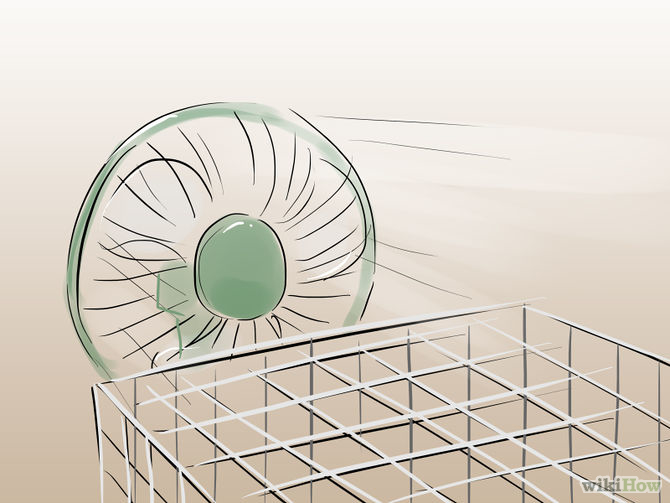
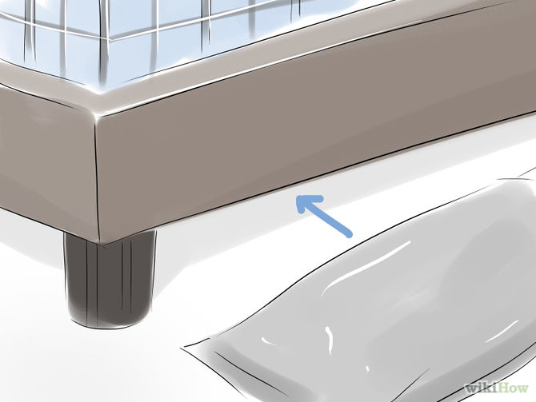

How to Keep Pet Rabbits Cool
Humans sweat. Pigs wallow in mud. Dogs pant. Rabbits don’t do any of these when they get too hot. In the wild, rabbits disappear into brush and burrow into the dirt in order to avoid the sun. Their entire bodies are covered in fur with the exception of their eyes, which means that finding shelter is their only option to keep cool. If you’ve adopted a pet rabbit, be sure to keep it in a relatively cool environment. Room temperature is fine, but anything hotter will lead to one overheated bunny.
Method 1 of 2: Creating a Cool Environment
-

Monitor the temperature. The ideal temperature for a rabbit is between 55 and 70 degrees Fahrenheit. They can tolerate temperatures as high as 85 degrees Fahrenheit, if absolutely necessary, but anything higher will increase their risk of heat stroke.
If you keep your rabbit outdoors, pay attention to the temperature. Summer time is the most common time of the year to be concerned. If your rabbit is left outdoors in a pen or a cage during the summer months, its fur will trap the sun’s heat, causing it to heat up quickly.
Keep your rabbit’s cage out of the sun. Cover any windows with blinds and curtains if necessary. If this doesn't make a difference, consider moving the cage to the coolest part of the house, such as a basement. If you have a window air conditioning unit, you can close the doors to that room and keep the bunny there. If you have central air conditioning, you may want to close some vents and direct the cool air to the rabbit room to manage the electricity bills. You can also purchase standing air conditioning units for a particular room.
-

Keep your rabbit’s cage well-ventilated. Use fans to cool your rabbit. Position an oscillating fan so that it blows in the rabbit cage. This will create a breeze to cool your rabbit down. Make sure that your rabbit can escape the fan if it chooses. You can build a hiding place for the rabbit with a cardboard box.
A wire covered cage allows air to flow freely from all sides. If your rabbit is outdoors in a hutch keep them in the shade and allow for cover without compromising ventilation. Bedding should be absorbent and non-toxic like straw, aspen shavings, CareFresh (recycled paper), or wheat-based like Eco-Straw. These materials air out easily and don’t retain heat.
A circulating ceiling fan above the cage is another option. Used in combination with floor fans, ceiling units can effectively ventilate your rabbit’s area.
-

Hang a wet towel over top of your rabbit cage. This is especially effective in combination with a running fan. Not only will the towel provide shade, but the cool moisture will help as well.
Take a normal sized shower towel (roughly 2.5' x 3.5'). Soak it in cool water. Wring it out and place it on top of the cage. Try to to cover the entire cage with the towel. You want to make sure that you don't obstruct the cage's ventilation. Make sure that the towel is not still dripping either. You don't want to soak your rabbit.
-

Use ice to cool down its cage. Put some ice packs underneath your rabbit cage. This will cool the bottom of the cage. You can also freeze a water bottle and place that inside the cage to create a cool spot for the rabbit to lie against when it is too hot. Never apply ice directly to the rabbit's body. Doing so may lower your rabbit’s temperature too quickly.
Method 2 of 2: Treating an Overheated Rabbit
-

Check for common signs of heat exhaustion. Your rabbit's ears are the most important to pay attention to. When rabbits overheat, blood vessels in their ears swell and cause a general redness to appear. This is a great indicator of heat stroke in rabbits. An overheated rabbit may also have one or more of the following symptoms:
Wet fur below the nose
Heavy and fast breathing
Flared nostrils
Sprawled out on the floor
Hot ears and feet
Inactive and not as alert as usual (lethargic)
Eyes half closed[10]
-

Brush your rabbit's fur. Rabbits shed a lot. Normally, they clean themselves and remove all the excess fur and dander. If your rabbit is shedding and not cleaning itself properly, this extra fur can act as another layer of insulation. In the winter, this works well for a rabbit. In the summer, it can lead to heat exhaustion.
Brush your rabbit from head to posterior. Keep your strokes light. You don’t want to remove too much fur or hurt your rabbit. Do so during the summer months regularly.
-

Do not submerge your rabbit in icy water. It is ok to dip its feet in water, but don't completely dunk it in it. Rabbits by nature are not strong swimmers. You may think that a quick dunk will cool them off, but in reality, it may exacerbate your rabbit's condition. The shock of the water may cause anxiety, which will elevate your rabbit’s core temperature.[14]
You can lightly mist your rabbit with water, but don't drench it.
Use ice to cool down its cage. Put some ice packs underneath your rabbit cage. This will cool the bottom of the cage. You can also freeze a water bottle and place that inside the cage to create a cool spot for the rabbit to lie against when it is too hot. Never apply ice directly to the rabbit's body. Doing so may lower your rabbit’s temperature too quickly.
See your veterinarian. Try calling your vet first. He may ask you to try different cooling measures before you bring your rabbit in for an exam. He’ll probably suggest many of the tips included above. If you’ve already tried all of these tips, tell your vet so and then proceed to bring your rabbit into the clinic.
Back to Top